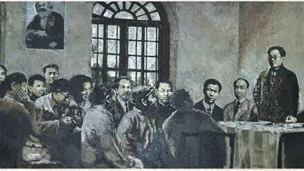
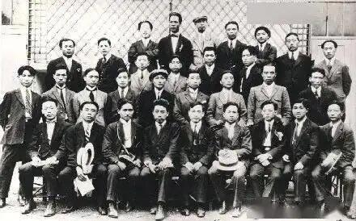
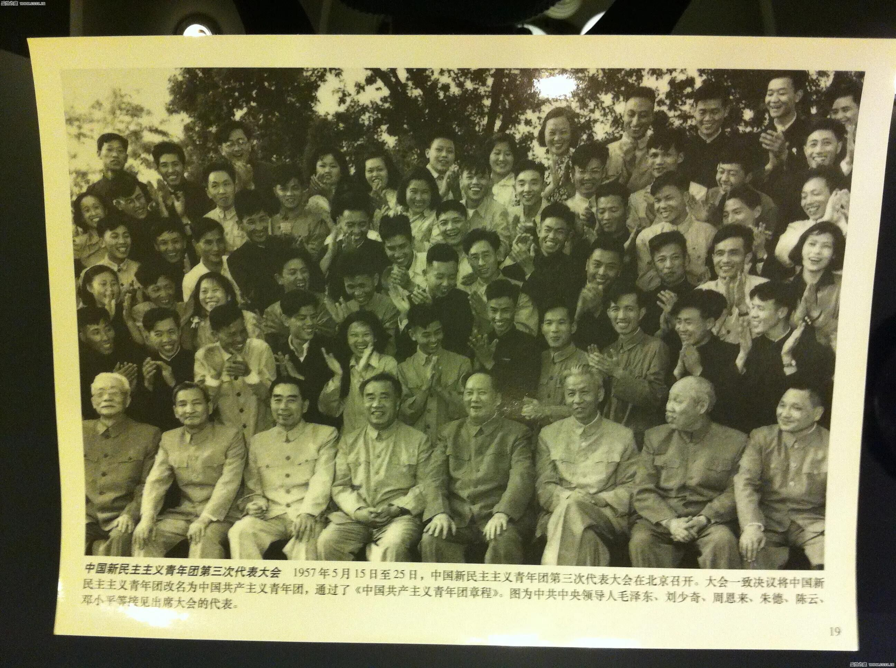
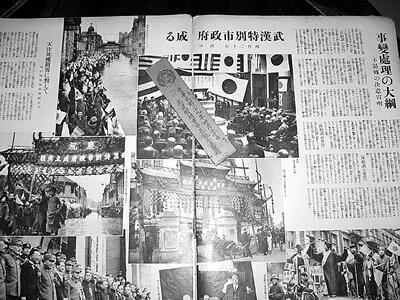
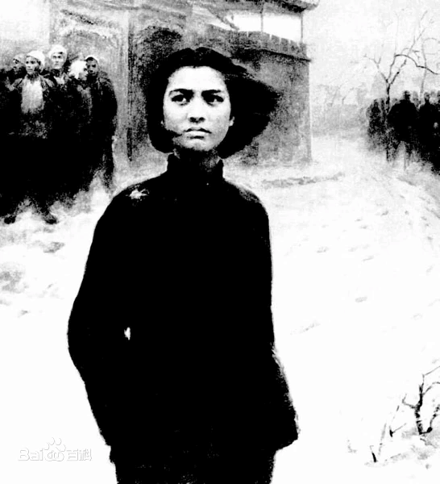
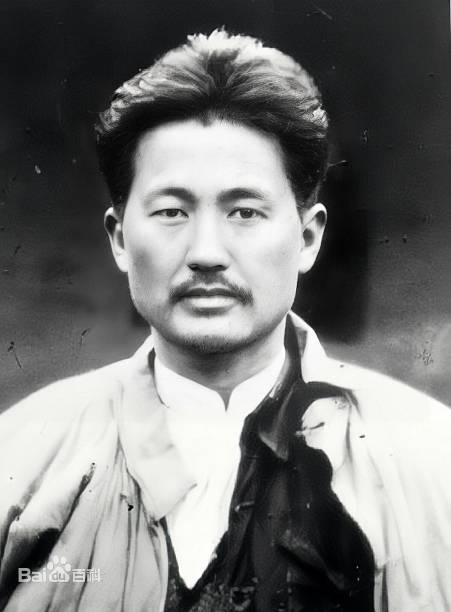

喜迎二十大 庆祝建团100周年
在黑暗中诞生,在时代中发展

社会主义青年团诞生
1920年8月
青年团诞生
中国共产党成立
1921年7月
共产党成立

在广州召开第一次全国代表大会
1922年5月
一大召开

青年团改名为中国共产主义青年团
1925年1月
共青团诞生

成为抗日救国的青年团体
1935年11月
救国青年团体
提出建立新民主主义青年团决议
1949年元旦
新民主主义青年团
召开青年团第一次全国代表大会
1949年4月
青年团第一次全国大会
青年团召开第三次全国代表大会....
1957年5月
第三次全国代表大会
-

刘胡兰
刘胡兰，一个15岁的农村姑娘，一个普通的共产党员，用自己宝贵的生命，挫败了敌人的罪恶阴谋；她以自己青春的热血，书写了一个共产党员的高尚气节。 -
张太雷
张太雷，中国共产党早期的重要领导人之一，是中国共产主义青年团的创始人之一和青年运动的卓越领导人，是广州起义的主要领导人。 -
俞秀松
俞秀松，中共上海发起组的成员，中共最早的党员之一，是党内历史上最早与王明交锋的斗士，曾任中国社会主义青年团第一任书记。 -
施存统
施存统,1922年担任中国社会主义青年团第一团中央书记。1949年后曾任第一、二、三届全国人民代表大会和第二届全国政治协商会议常务委员等职。 -
高君宇
高君宇，五四运动时为北京大学学生会负责人，1922年当选为中国社会主义青年团一届中央执行委员。他还是中国共产党第二、三届中央委员。 -
 黄爱
黄爱
黄爱，湖南工人运动领袖。1919年9月，被周恩来邀请为觉悟社第一批社员，之后发起组织湖南劳工会，被推选为主任干事和教育部主任。 -
庞人铨
庞人铨，湖南工人运动领袖，湖南劳工会创建人之一。中国劳动组合书记部称他和黄爱是“中国第一次为无产阶级而死的先烈”。 -

方志敏
方志敏，1922年8月加入中国社会主义青年团，是无产阶级革命家、军事家、杰出的农民运动领袖。
更多楷模
回到发展史
回到青年楷模